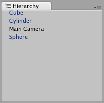
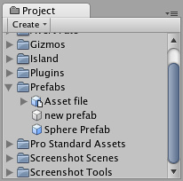

Prefabs
A Prefab is a type of asset -- a reusable GameObject stored in Project View. Prefabs can be inserted into any number of scenes, multiple times per scene. When you add a Prefab to a scene, you create an instance of it. All Prefab instances are linked to the original Prefab and are essentially clones of it. No matter how many instances exist in your project, when you make any changes to the Prefab you will see the change applied to all instances.
Creating Prefabs
In order to create a Prefab, simply drag a GameObject that you've created in the scene into the Project View. The GameObject's name will turn blue to show that it is a Prefab. You can rename your new Prefab.
After you have performed these steps, the GameObject and all its children have been copied into the Prefab data. The Prefab can now be re-used in multiple instances. The original GameObject in the Hierarchy has now become an instance of the Prefab.
Prefab Instances
To create a Prefab instance in the current scene, drag the Prefab from the Project View into the Scene or Hierarchy View. This instance is linked to the Prefab, as displayed by the blue text used for their name in the Hierarchy View.

Three of these GameObjects are linked to Prefabs. One of them is not.
- If you have selected a Prefab instance, and want to make a change that affects all instances, you can click the button in the Inspector to select the source Prefab.
- Information about instantiating prefabs from scripts is in the Instantiating Prefabs page.
Inheritance
Inheritance means that whenever the source Prefab changes, those changes are applied to all linked GameObjects. For example, if you add a new script to a Prefab, all of the linked GameObjects will instantly contain the script as well. However, it is possible to change the properties of a single instance while keeping the link intact. Simply change any property of a prefab instance, and watch as the variable name becomes bold. The variable is now overridden. All overridden properties will not be affected by changes in the source Prefab.
This allows you to modify Prefab instances to make them unique from their source Prefabs without breaking the Prefab link.

A linked GameObject with no overrides enabled.

A linked GameObject with several (bold) overrides enabled.
- If you want to update the source Prefab and all instances with the new overridden values, you can click the button in the Inspector.
- Note that the root's position and rotation will not be applied, as that affects the instances absolute position and would put all instances in the same place. However position and rotation from any children or ancestors of the root will be applied as they are computed relative to the root's transform.
- If you want to discard all overrides on a particular instance, you can click the button.
Imported Prefabs
When you place a mesh asset into your Assets folder, Unity automatically imports the file and generates something that looks similar to a Prefab out of the mesh. This is not actually a Prefab, it is simply the asset file itself. Instancing and working with assets introduces some limitations that are not present when working with normal Prefabs.

Notice the asset icon is a bit different from the Prefab icons
Notice the asset icon is a bit different from the Prefab icons
The asset is instantiated in the scene as a GameObject, linked to the source asset instead of a normal Prefab. Components can be added and removed from this GameObject as normal. However, you cannot apply any changes to the asset itself since this would add data to the asset file itself! If you're creating something you want to re-use, you should make the asset instance into a Prefab following the steps listed above under "Creating Prefabs".
- When you have selected an instance of an asset, the button in the Inspector is replaced with an button. Clicking this button will launch the editing application for your asset (e.g. Maya or Max).
Page last updated: 2012-09-14